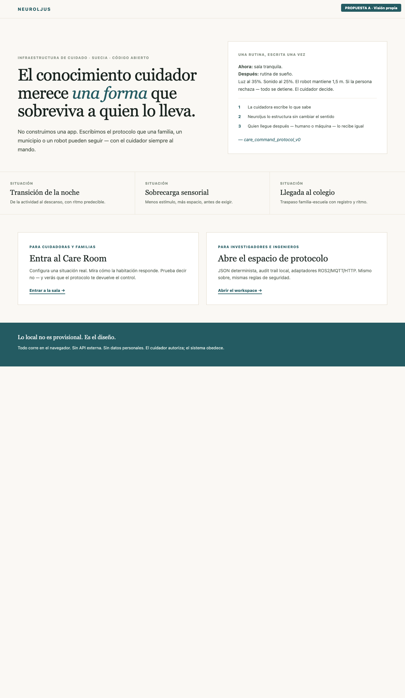
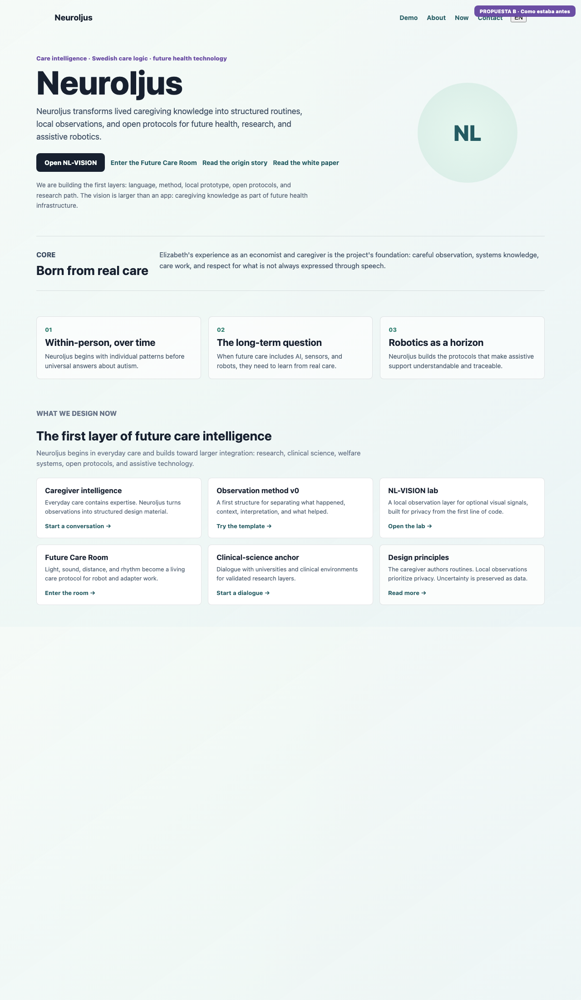
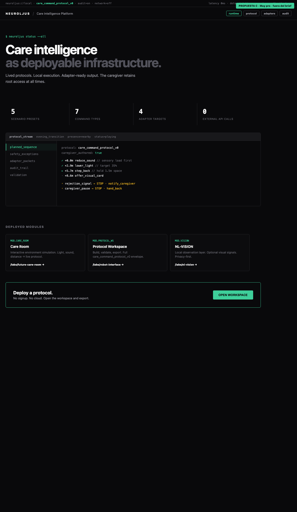
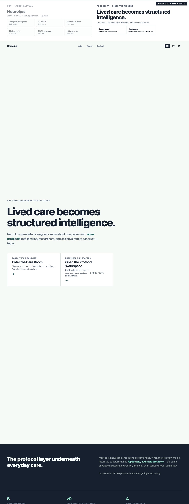
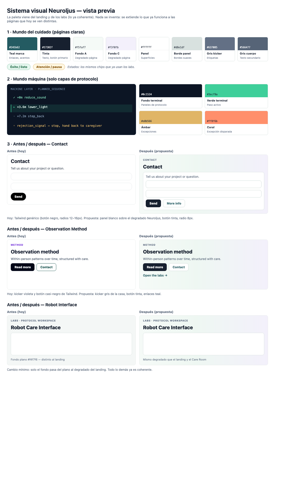

Abre cada imagen para comparar. Cuatro direcciones distintas para el mismo proyecto.
Editorial, humano, serif + sans. El protocolo como carta que sobrevive al cuidador. Sueco en primer plano. Sin postureo tech.

Hero con logo, 4 CTAs, párrafo de estado, 3 artículos, cuadrícula de 6 tarjetas. Gradiente verde, kicker púrpura.

Negro total, consola en vivo, métricas, módulos. Como Linear o Stripe Dashboard. Infraestructura que ya está corriendo.

Hero minimal, dos audiencias, banda oscura, situaciones como pioneros.

Colores del sistema + antes/después de páginas sueltas.
